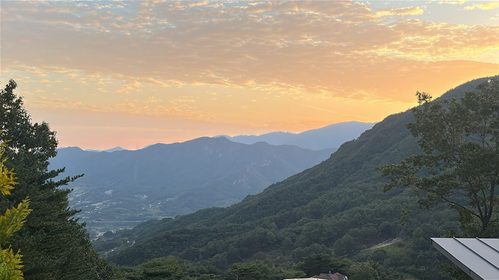
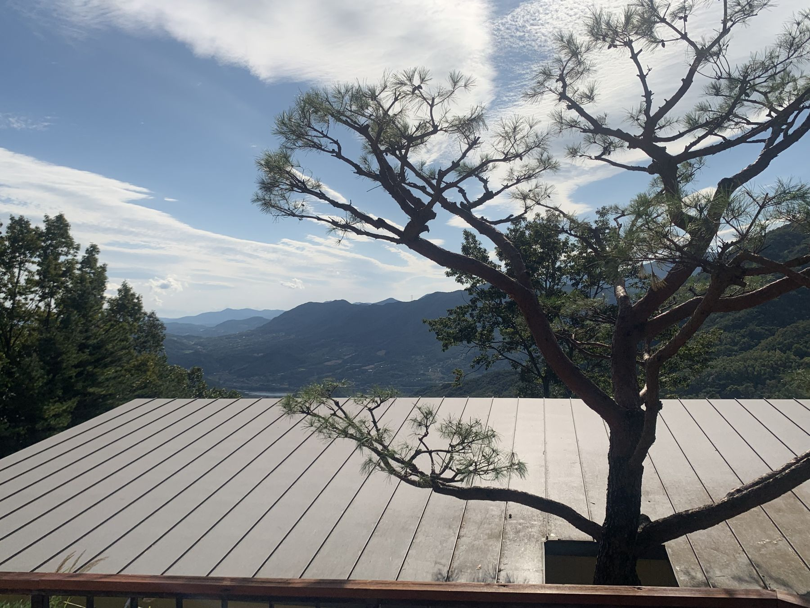
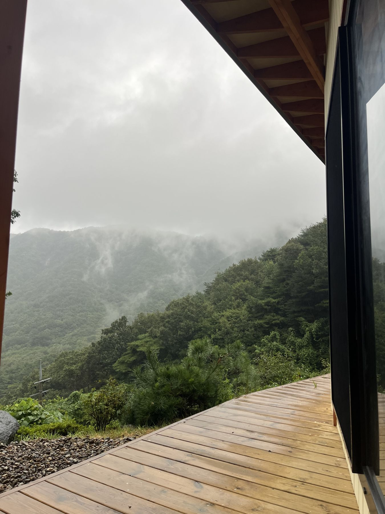
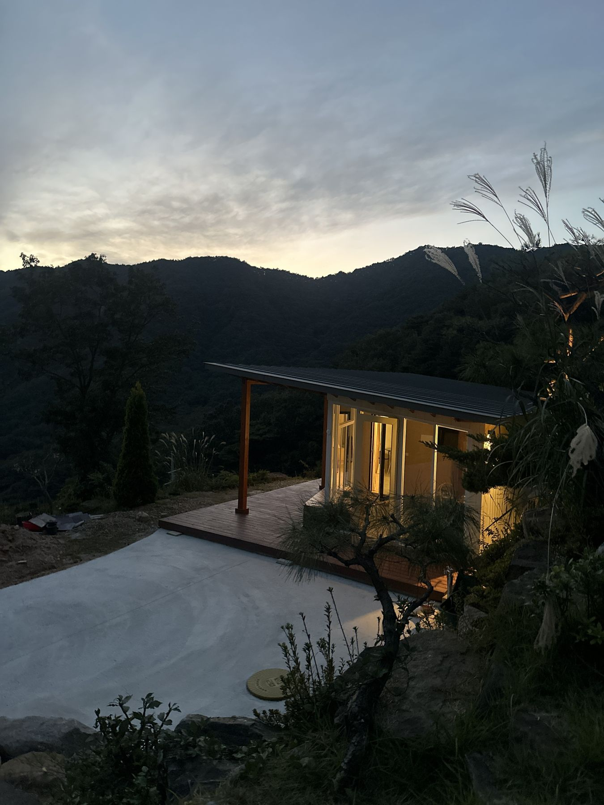
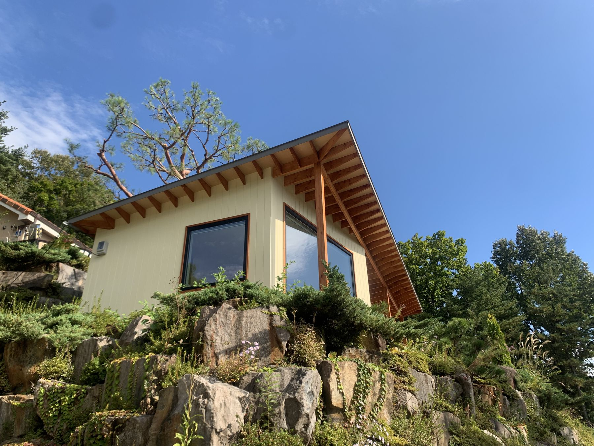
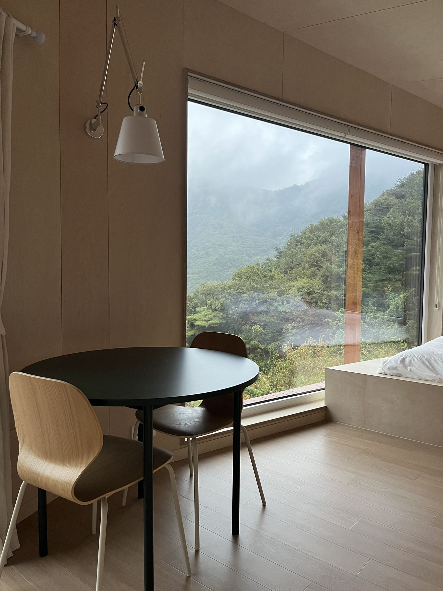

STORY
이야기
같은 자리에서 매번 다른 산을 봅니다.
소나무 한 그루
집보다 먼저 이 자리에 있던 소나무.
자르고 지으면 편했을 것이다.
집은 더 넓어지고, 비용은 덜 들고.
그래도 살리기로 했다.
소나무를 비켜 집을 앉히고,
지붕도 나무를 피해 돌아갔다.
대신 그쪽으로 창을 하나 냈다.
안에 앉으면 창 가득 소나무가 들어온다.

매번 다른 산
창밖 풍경은 계절마다,
하루에도 시시각각 달라집니다.
운무가 골짜기를 채우는 아침,
비 내리는 오후,
불을 끈 밤.
같은 자리에서
매번 다른 산을 봅니다.

해가 능선 너머로 넘어가면
구름이 먼저 물들고,
산은 천천히 어두워집니다.
데크에 서면 이 풍경이 눈앞에 있고,
집 안에서는 창에 그대로 담깁니다.
처음 이 집을 만났을 때
마음을 붙든 것도
이 시간의 풍경이었습니다.

여행을 다닐 때마다
아쉬움이 있었습니다.
사랑하는 반려견과 함께
마음 놓고 머물 만한 숙소를
찾기가 쉽지 않았습니다.
그래서 우리가 머물고 싶었던 공간을
산청에 만들었습니다.

스테이솔숲의 아침
아침을 차려 드리지는 않습니다.
누가 조식을 가져다주고,
그 시간에 맞춰 먹는 건
조금 부담스럽더라고요.
그래서 저희는
셀프 조식으로 준비했습니다.
대신 재료만큼은
산청에서 나는 건강한 재료로
대접하고 싶었습니다.

빵 · 목화빵집
산청 원지의 로컬 목화빵집에서
건강한 재료로 만든 빵을 가져옵니다.
빵 종류는 그때그때
조금씩 달라질 수 있어요.
토스터에 살짝 데워 드시면 더 맛있어요.
유정란 · 이근좌 박사란
산청 신등의 이근좌 박사란.
귀농한 수의학 박사가 만드는
무항생제 방사 유정란, 1번 란입니다.
농장의 말은 「뛰어놀다 낳은 알」.
비린 맛 때문에 달걀을 잘 못 먹던 솔숲지기도
이 달걀은 잘 먹습니다.
잼 · 예성농원
청정골 지리산 산청 예성농원에서
수제로 만든 블루베리·딸기 잼입니다.
블루베리와 딸기가 반씩, 유기농 설탕은 23%.
설탕이 적어 덜 달고 건강합니다.
그래서 냉장 보관은 필수입니다.
요거트 · 견과류 · 크림치즈
원유 99.9%에 유산균만 넣은
달지 않은 플레인 요거트입니다.
견과류를 넣어 아침 식사로 드셔도 좋습니다.
크림치즈도 함께 준비해 둡니다.
커피 · 솔직한 곰
산청읍 로컬 로스터리 카페 솔직한 곰에서
직접 로스팅한 원두입니다.
약간 진한 강배전 커피,
솔숲지기가 제일 좋아하는 커피 중 하나입니다.
봉지 커피 대신 이 원두를 갈아 두었으니
필터와 드립 도구로 직접 내려 드세요.
웰컴티 · 산청녹차
지리산 계곡에 자생하는 차나무에서
어린 찻잎만 따서 전통 방식으로 덖은
산청 작설차입니다.
커피와 함께 웰컴티로 드립니다.
시간에 맞추지 않으셔도 됩니다.
천천히 드시면서
여유로운 시간을 즐겨 보세요.
혼자여도, 둘이어도,
반려견과 함께여도 좋습니다.
창밖의 초록 풍경과
새들이 지저귀는 소리로 아침을 맞으며,
서두르지 않고 천천히 쉬어가세요.